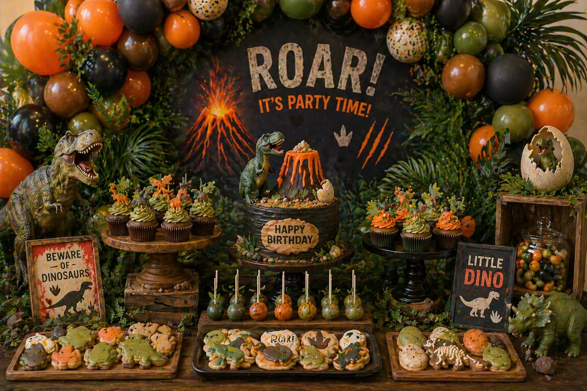
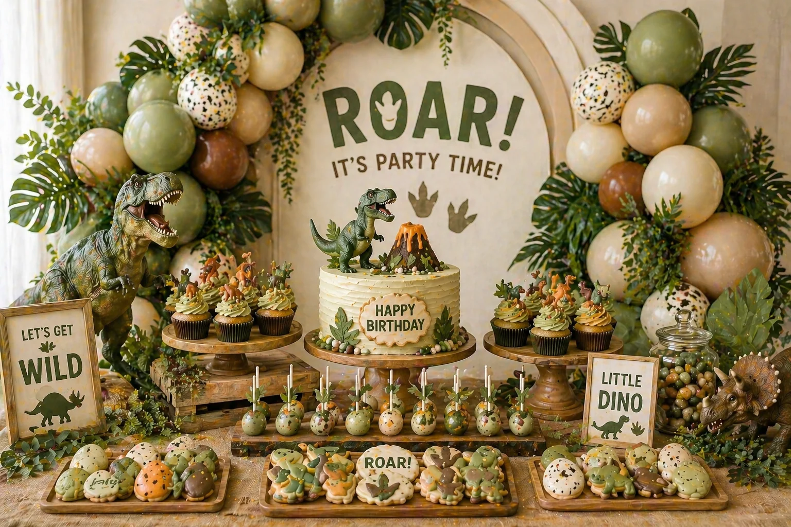

A dinosaur party is one of the most popular birthday themes for young children, and it is easy to understand why. The combination of jungle greens, earthy tones, wild textures and prehistoric curiosity creates a dessert table that feels genuinely adventurous. Whether you go full jungle with deep greens and tropical leaves, or take a more dramatic route with a volcano or lava palette, a well-styled dinosaur table can become the visual heart of the whole celebration.
At Little Moment Studio, our focus is birthday balloon styling and celebration setups. We do not make cakes or cupcakes ourselves, but we know how important the dessert table is to the overall look. This guide is about dinosaur party styling inspiration — colour palettes, table ideas, cupcake ideas and how to bring the whole setup together alongside a beautiful balloon display.
If you would like cupcakes or a cake to complement your balloon setup, we are happy to recommend a trusted local cake maker.
Why Dinosaur Dessert Tables Work So Well
Dinosaur parties have a strong and immediately recognisable visual language. Greens, earthy browns, jungle leaves, fossil textures and dinosaur figures all communicate the theme without needing to explain it. When the balloons, cake, cupcakes and props all speak the same language, the effect is something children and parents remember long after the party is over.
The best dinosaur tables feel wild but coordinated — deliberately styled rather than simply assembled. One bold centrepiece cake, twelve to twenty-four cupcakes, cookies in dinosaur shapes, cake pops and a couple of sweet jars is usually enough. Jungle leaf props, miniature dinosaur figures and wooden or natural stands add themed texture without cluttering the table.
| Element | What It Adds |
|---|---|
| Balloon garland | Frames the dessert table, creates jungle-like backdrop, repeats the earthy palette |
| Jungle leaves & foliage | Gives the setup a wild, natural feel that suits the theme |
| Dinosaur cake | Main party centrepiece and focal point of the table |
| Cupcakes | Easy to serve, ideal for dinosaur figures, fossils and footprint toppers |
| Dinosaur cookies | Shaped decoration in the palette colours, great for party bags too |
| Cake pops | Add height variation and themed detail |
| Dinosaur figures | The single most impactful prop detail — a roaring T-Rex mid-table is memorable |
| Natural wooden stands | Ground the table in earthy textures that reinforce the jungle and prehistoric feel |
| Moss & greenery | Worked around the base of stands and trays, adds a jungle landscape effect |
Dinosaur Party Colour Palettes
Choosing the colour palette first makes the whole table easier to plan. Share it with your balloon stylist, cake maker and florist so every element coordinates naturally. Dinosaur party palettes tend to be earthy, bold or both — but the key is choosing one direction and repeating it gently across every element rather than mixing unrelated colours.
Classic Jungle
Forest green, warm beige, brown, cream. The most popular dinosaur palette — natural, earthy and instantly prehistoric.
Volcano
Orange, near-black, dark brown, deep green. Dramatic and adventurous — perfect for a lava or volcano dinosaur theme.
Soft Neutral
Sage, cream, warm beige, sand. A softer take on the dino theme — beautiful for first birthdays or a more muted look.
Prehistoric Terra
Terracotta, olive, warm sand, cream. Earthy and warm — a slightly more grown-up alternative to classic jungle green.
Teal & Blue Dino
Teal, jungle green, cream, sky blue. A brighter, bolder palette that works especially well for T-Rex and water dinosaurs.
Bright Adventure
Green, orange, golden yellow, cream. Bold and playful — good for younger children or a brighter, high-energy party feel.
Khaki & Olive
Khaki, olive, tan, warm ivory. A muted and modern take on the theme — particularly popular for boys’ first birthdays.
Pastel Dino
Mint, peach, cream, sage. A soft and sweet dinosaur palette for younger children or a gender-neutral first birthday.
The key to a coordinated dinosaur table
Share the colour palette with everyone involved before they begin designing. The cake maker, balloon stylist and prop supplier do not need to match each other exactly — they just need to work from the same colour family. When every element speaks the same earthy language, the table looks wild in exactly the right way.
Idea 1: Classic Jungle — Green, Beige & Brown
The classic jungle dinosaur table is the most popular version of this theme and for good reason. Forest green, warm beige and brown create a natural, earthy setting that photographs well in any lighting and works equally at home or in a hired venue. It is warm without being garish, and it gives the dinosaur figures and cake the right backdrop to really stand out.
This style pairs beautifully with a deep green and beige organic balloon garland worked through with tropical leaves, ferns and eucalyptus. On the table, natural wooden cake stands, moss details, tropical leaf cookies and a jungle-style cake with a T-Rex figure topper all reinforce the prehistoric atmosphere. Dinosaur cupcakes with green buttercream swirls and a miniature dinosaur figure on each one are a simple and very effective detail.
This is a strong choice for any age, but it is particularly well suited to first and second birthdays where you want the table to feel immersive and special without relying on cartoon imagery.
Idea 2: The Volcano Table — Orange, Black & Green
A volcano-themed dinosaur table brings a more dramatic energy. Orange, near-black, dark brown and deep jungle green create a setting that feels genuinely prehistoric — as though something is about to erupt. This is one of the most striking dinosaur party setups and it works very well at evening or late-afternoon parties where the colour drama can really land.
Key elements include deep olive and dark green balloons with orange accents in the garland, a volcano cake centrepiece with lava-style icing in orange and red, chocolate buttercream cupcakes with orange and green details, cake pops in dark brown and orange, and cookies in dinosaur and volcanic rock shapes. Miniature dinosaur figures emerging from the lava details of the cake are always a memorable touch.

Volcano dinosaur party dessert table styled by Little Moment Studio, Kent — orange, near-black and jungle green with volcano cake and dinosaur cupcakes
Idea 3: Soft & Neutral — Sage, Cream & Beige
A soft neutral dinosaur table is a beautiful alternative to the bold jungle or volcano styles. Sage, cream, warm beige and natural sand create a table that feels gentle and considered — still undeniably a dinosaur party, but with a muted, styled quality that photographs softly and works especially well for younger children and first birthdays.
This style uses a sage and cream organic balloon garland with natural dried pampas grass, eucalyptus and neutral greenery worked in. On the table, wooden stands, linen table fabric, cream cupcakes with small sage-toned dinosaur figures, a simple neutral cake with a fossil or footprint detail, and small terracotta or clay-coloured props all contribute to a cohesive, lifestyle-shoot quality that parents tend to love.

Soft neutral dinosaur party dessert table styled by Little Moment Studio, Sittingbourne — sage, cream and beige with wooden stands and dried natural foliage
Idea 4: Bright & Bold — Green, Orange & Yellow
For a high-energy, playful dinosaur party, a brighter palette of grass green, orange and golden yellow brings the theme to life in a way that feels exciting and joyful. This style suits younger children who love colour and visual energy. It photographs well in natural light and works particularly well for outdoor or garden celebrations.
Key elements include a bright green balloon garland with pops of orange and yellow, a bold layered cake in green and orange, bright cupcakes with rainbow sprinkles and dinosaur toppers, yellow and green cake pops, and leaf-shaped cookies with bold icing. Oversized dinosaur party props — footprint plates, jungle vines and large dinosaur figures — suit this palette very well.
Idea 5: Prehistoric Terra — Terracotta, Olive & Sand
A terracotta and olive dinosaur table has a slightly more grown-up, considered quality. It sits between the bold jungle look and the soft neutrals, using warm earthy tones that feel natural and archaeological in feel. This palette suits children who are genuinely fascinated by the prehistoric world rather than cartoon dinosaurs.
Good elements include a terracotta and olive balloon garland, a cake decorated to look like sandstone or fossil rock, cupcakes with gold-lustre fossil fondant toppers, sand-coloured cookies shaped like fossils and leaves, and ceramic or textured props. Natural linen, dried botanicals and wooden cheese boards used as serving platters all work well with this palette.
“A single well-chosen cake and a wall of coordinated balloons will do more for the room than a table overloaded with mismatched props. Decide on the palette first, then build everything else around it.”
What to Include on the Table
A well-styled dinosaur dessert table does not need to be crowded. One main cake, twelve to twenty-four cupcakes, cookies, cake pops and a sweet jar or two is usually enough for most children’s parties. The key is themed detail and good height variation rather than volume.
| Treat | Dinosaur Party Idea |
|---|---|
| Cake | T-Rex figure cake, volcano cake, dinosaur egg cake, jungle layer cake, fossil-textured cake |
| Cupcakes | Dinosaur figure toppers, fossil fondant toppers, green buttercream swirls, footprint details |
| Cake pops | Green dipped pops, dinosaur egg pops, orange and brown adventure pops |
| Cookies | Dinosaur shapes, fossils, leaves, footprints, volcanoes, eggs, bones |
| Sweet jars | Green sweets, jelly dinosaurs, chocolate rocks, dinosaur gummies |
| Mini desserts | Dino-topped chocolate bark, fossil brownie bites, green meringues |
Dinosaur Cupcake Ideas
Cupcakes are perfect for dinosaur parties because they are easy to theme individually and simple for children to take and enjoy. A tray of well-piped cupcakes each with its own miniature dinosaur figure or fossil topper creates one of the most memorable details on the whole table.
| Cupcake Style | Colours & Detail |
|---|---|
| Dinosaur figure cupcake | Green buttercream swirl, small plastic or fondant dino figure on top |
| Fossil cupcake | Chocolate or neutral buttercream, fondant fossil or footprint topper |
| Volcano cupcake | Dark chocolate buttercream, orange and red lava drizzle |
| Jungle cupcake | Deep green rosette, crushed graham cracker “earth”, small leaf detail |
| Dino egg cupcake | Speckled blue-green buttercream dome, fondant egg topper |
| Soft neutral cupcake | Sage or cream buttercream, small figurine or neutral fondant detail |
For piping styles and techniques, see our guide to the best piping tips for cupcakes. The Wilton 1M produces a tall swirl ideal for dinosaur and jungle cupcakes, the 2D creates a softer rosette, and the 1A gives a smooth rounded dome suited to fondant toppers and fossil details. For two-tone green and brown buttercream, the cling film method for multi-coloured buttercream makes it simple to load two colours at once.
For step-by-step dinosaur cupcake designs — nest cupcakes with speckled eggs and volcano lava cupcakes — see our dinosaur party cupcake ideas guide. For a wider range of birthday cupcake ideas, see our birthday cupcake ideas guide.
Dinosaur Cookie & Cake Pop Ideas
Cookies and cake pops are ideal for adding small themed details that help the table feel complete. Dinosaur cookies in particular are one of the most visually satisfying elements of the whole setup because the shapes are so recognisable and the royal icing decoration can pick up the palette in precise detail.
Good cookie shapes for a dinosaur table include T-Rex, Triceratops, Brachiosaurus, dinosaur eggs, fossils, footprints, leaves, volcanoes and bones. Iced in the same colour palette as the balloons and cake, they become part of the visual story of the table rather than a standalone treat.
Good cake pop ideas include green cake pops rolled in sprinkles to look like jungle spheres, dinosaur egg pops in speckled blue and green, orange lava pops for a volcano theme, plain chocolate pops with a small edible dinosaur sticker, and pale sage pops with a minimal fossil-ink print. Displayed upright in a small jar of sand or moss, they add height to the front of the table and reinforce the jungle landscape feel.
Matching Balloons, Cake & Cupcakes by Theme
The easiest way to make the whole dinosaur setup feel coherent is to carry the same palette from the balloons through to the cake and cupcakes. They do not need to match exactly — just close enough to feel like they belong to the same world.
| Balloon Palette | Cake & Cupcake Ideas |
|---|---|
| Forest green, beige, brown | Jungle layer cake, green buttercream cupcakes with dino figures, leaf cookies |
| Orange, black, deep green | Volcano cake, chocolate cupcakes with orange lava drizzle, rock-shaped cookies |
| Sage, cream, beige | Neutral fossil cake, cream cupcakes with fossil toppers, sand-toned cookies |
| Terracotta, olive, sand | Sandstone-textured cake, fossil fondant cupcakes, terracotta cookies |
| Teal, green, cream | Blue-green ombre cake, speckled dino egg cupcakes, leaf and scale cookies |
| Bright green, orange, yellow | Bold layered cake, rainbow sprinkle cupcakes, brightly iced dino cookies |
For a detailed guide to pairing cupcakes with balloon displays, see how to match cupcakes with your balloon display.
Dinosaur Balloon Ideas for Dessert Tables
The balloon display is what gives the dessert table its scale and its atmosphere. For a dinosaur party, the balloons should feel wild and lush rather than formal — worked through with real foliage so the garland looks as though the jungle is growing up around the table.
- A forest green, olive and beige organic balloon garland with tropical leaves and ferns worked through gives an immersive jungle effect
- Deep olive, burnt orange and dark green for a more dramatic volcano or adventure theme
- Sage, cream and dried pampas for a soft neutral first-birthday version
- Adding eucalyptus, monstera leaves or palm fronds to any dinosaur garland reinforces the prehistoric atmosphere
- Balloon garlands can be floor-standing, wall-mounted behind the table or draped from a frame or arch structure
- A balloon column or two flanking the table creates height and frames the setup without a full garland
For more birthday balloon ideas, see our guide to first birthday balloon ideas, or visit our birthday balloon styling page to see packages and availability.
Working with a Local Cake Maker
Once you have chosen the balloon colours and dinosaur theme, sharing that information with your cake maker early makes a significant difference to the finished result. The most visually cohesive dinosaur tables are the ones where the cake designer and balloon stylist worked from the same palette before either began.
- Can the cake colours match the balloon palette?
- Can they create a T-Rex figure, volcano, fossil or other dinosaur centrepiece?
- Can they make matching cupcakes with dinosaur figure or fossil toppers?
- Can they make dinosaur-shaped cookies to complete the table?
- Can they make cake pops in the palette colours?
- What size cake is right for the number of guests?
- Are any decorations non-edible (wires, sticks, plastic figures)?
- Will the cake be delivered or collected, and when?
At Little Moment Studio, we are happy to recommend a trusted local cake maker if you would like cupcakes or a cake to complement your dinosaur balloon display. Get in touch and we can point you in the right direction.
Planning the Table Layout
Once you have chosen the dinosaur theme, palette and treats, the next step is arranging everything on the table. A good dinosaur table is not flat — it has peaks and valleys, tall elements at the back, shorter ones at the front, and small props tucked in between to fill the gaps without cluttering.
We cover the layout side in detail in our full guide: how to style a dessert table for a children’s party. The principles apply directly to dinosaur parties — different-height cake stands, the largest element at the back, the smallest treats at the front, and the palette repeated gently across every element from the balloon garland behind to the sweet jars at the front.
Planning a Dinosaur Party in Kent?
We design and install beautiful birthday balloon displays across Sittingbourne and Kent. Free consultation, no obligation. We can also recommend a trusted local cake maker to complete the setup.